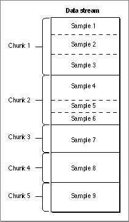

An Introduction to Samples
One way to describe a sample (that is, a single element of a sequence of time-ordered data) is to include it in a sample table atom. Samples are stored sequentially in the media, and they may have varying durations. This approach enforces an ordering of the samples--it does not mean the sample data must be stored sequentially with respect to movie time in the actual data stream. Figure 4-22 shows the way that samples are stored in a series of chunks in a media. Chunks are a collection of data samples in a media that allow optimized data access. A chunk may contain one or more samples. Chunks in a media may have different sizes, and the samples within a chunk may have different sizes.Figure 4-22 Samples in a media
